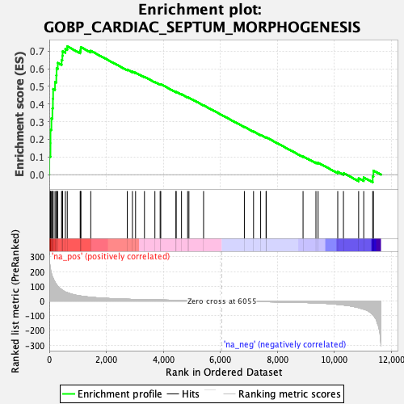
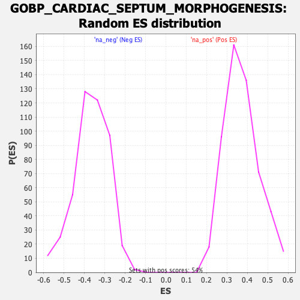

| | | Dataset | DE_genes |
| Phenotype | NoPhenotypeAvailable |
| Upregulated in class | na_pos |
| GeneSet | GOBP_CARDIAC_SEPTUM_MORPHOGENESIS |
| Enrichment Score (ES) | 0.7263944 |
| Normalized Enrichment Score (NES) | 1.9617537 |
| Nominal p-value | 0.0 |
| FDR q-value | 0.0011198614 |
| FWER p-Value | 0.012 |
Table: GSEA Results Summary

Fig 1: Enrichment plot: GOBP_CARDIAC_SEPTUM_MORPHOGENESIS
Profile of the Running ES Score & Positions of GeneSet Members on the Rank Ordered List
| SYMBOL | RANK IN GENE LIST | RANK METRIC SCORE | RUNNING ES | CORE ENRICHMENT | | 1 | TBX3 | 2 | 291.980 | 0.1043 | Yes |
| 2 | TGFBR2 | 42 | 215.820 | 0.1781 | Yes |
| 3 | NRP2 | 43 | 214.482 | 0.2548 | Yes |
| 4 | NOTCH1 | 75 | 187.352 | 0.3192 | Yes |
| 5 | SOX4 | 110 | 165.292 | 0.3754 | Yes |
| 6 | ROBO1 | 127 | 158.325 | 0.4306 | Yes |
| 7 | NRP1 | 135 | 154.822 | 0.4854 | Yes |
| 8 | DHRS3 | 201 | 127.951 | 0.5256 | Yes |
| 9 | SLIT2 | 247 | 113.755 | 0.5624 | Yes |
| 10 | SMAD7 | 256 | 110.513 | 0.6012 | Yes |
| 11 | NOTCH2 | 297 | 99.172 | 0.6332 | Yes |
| 12 | BMPR2 | 432 | 76.556 | 0.6491 | Yes |
| 13 | HEY1 | 459 | 73.231 | 0.6730 | Yes |
| 14 | TGFBR3 | 467 | 72.588 | 0.6984 | Yes |
| 15 | WNT5A | 564 | 61.101 | 0.7119 | Yes |
| 16 | HES1 | 631 | 56.302 | 0.7264 | Yes |
| 17 | SMO | 1084 | 34.331 | 0.6997 | No |
| 18 | ACVR1 | 1100 | 33.919 | 0.7105 | No |
| 19 | PROX1 | 1107 | 33.701 | 0.7221 | No |
| 20 | HEYL | 1455 | 25.510 | 0.7012 | No |
| 21 | SMAD6 | 2736 | 12.069 | 0.5951 | No |
| 22 | TP53 | 2917 | 10.838 | 0.5835 | No |
| 23 | ROBO2 | 3027 | 10.188 | 0.5777 | No |
| 24 | TBX2 | 3339 | 8.788 | 0.5540 | No |
| 25 | SLIT3 | 3705 | 7.328 | 0.5251 | No |
| 26 | CHD7 | 3889 | 6.716 | 0.5118 | No |
| 27 | MIR17HG | 3911 | 6.639 | 0.5123 | No |
| 28 | GATA6 | 4445 | 5.135 | 0.4682 | No |
| 29 | RBPJ | 4450 | 5.117 | 0.4696 | No |
| 30 | SMAD4 | 4639 | 4.685 | 0.4551 | No |
| 31 | RBM15 | 4854 | 4.149 | 0.4381 | No |
| 32 | ZFPM2 | 4899 | 4.079 | 0.4358 | No |
| 33 | TBX20 | 5413 | 3.102 | 0.3926 | No |
| 34 | MSX2 | 6844 | -3.469 | 0.2705 | No |
| 35 | FZD2 | 7166 | -4.018 | 0.2442 | No |
| 36 | SAV1 | 7415 | -4.561 | 0.2245 | No |
| 37 | FZD1 | 7605 | -5.015 | 0.2100 | No |
| 38 | PARVA | 7614 | -5.029 | 0.2111 | No |
| 39 | ISL1 | 8903 | -9.905 | 0.1035 | No |
| 40 | NOG | 9355 | -13.063 | 0.0692 | No |
| 41 | NKX2-5 | 9431 | -13.720 | 0.0677 | No |
| 42 | DNAH11 | 10120 | -23.000 | 0.0165 | No |
| 43 | FGFRL1 | 10320 | -27.097 | 0.0091 | No |
| 44 | CCN1 | 10853 | -45.304 | -0.0206 | No |
| 45 | MDM2 | 11032 | -55.473 | -0.0161 | No |
| 46 | CITED2 | 11347 | -92.457 | -0.0102 | No |
| 47 | TGFB2 | 11372 | -97.890 | 0.0228 | No |
Table: GSEA details [plain text format]

Fig 2: GOBP_CARDIAC_SEPTUM_MORPHOGENESIS: Random ES distribution
Gene set null distribution of ES for GOBP_CARDIAC_SEPTUM_MORPHOGENESIS